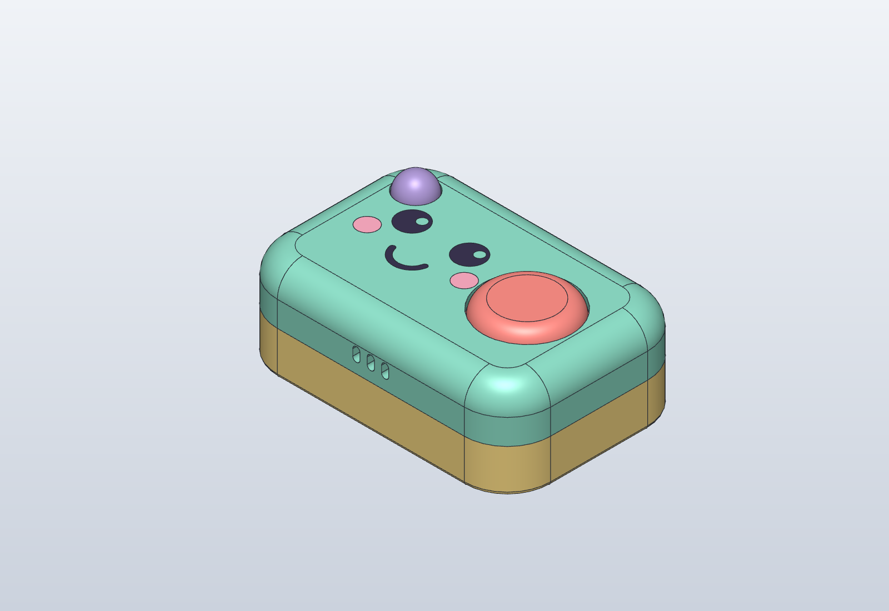
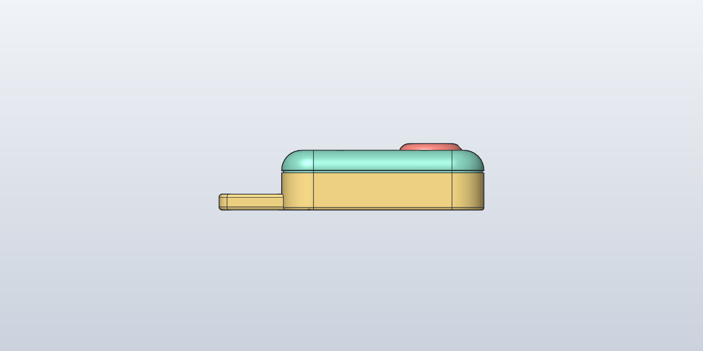
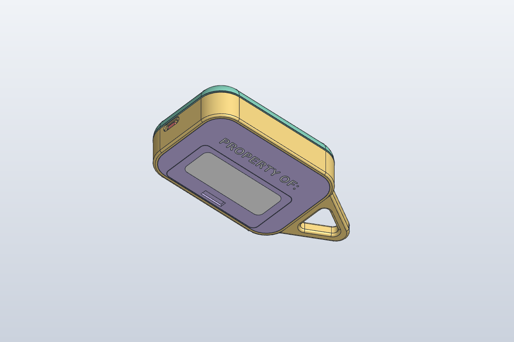
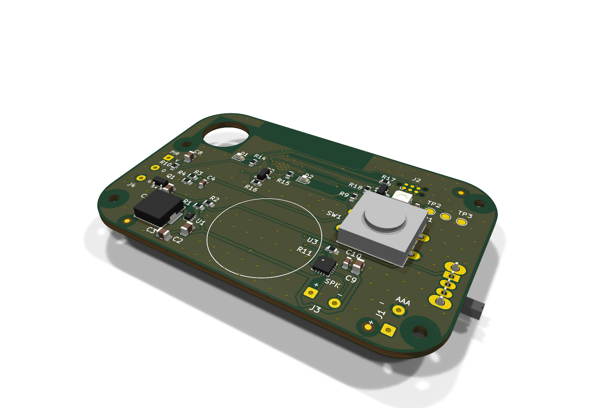
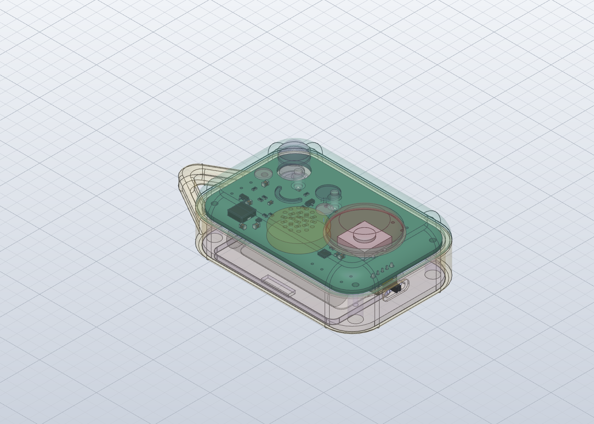

Whose bag is it, anyway?
The kid owns it. The teacher has to be able to switch it off.
Their snacks keep "wandering off"
It clips onto the backpack with a real carabiner, or lies flat on a locker shelf. They pick the ringtone and the button colour from a phone, then write their name on the back in marker so everyone knows whose guard this is.
One slide and it's quiet
In Rev A you had to pull a battery to stop it. Now there's a slide switch on the end that cuts the power completely. The big glowing button still silences an alarm in one press, so anyone can see how to make it stop.
"Hands off my snacks!"A hand reaches into the backpack, the eyes start flashing, and Für Elise plays until someone hits the big button.
Switch it on and set it off
Slide the power on, pick a ringtone and a button colour, then reach for the backpack. Tap the big button to silence it.
Tap the switch on the right end, or the big button.
Ringtone
Button colour
It's switched off. Slide the power on.
These are the firmware's real sounds: Phil Burk's Mobileer ringtone engine, rendered on a Mac at 22.05 kHz with the same code and data the board plays. Through the real 20 mm speaker they'll sound thinner. The lights are drawn here and follow the sound's loudness, as the firmware does. The real quiet time after a silence is 60 s; here it's 5 s.
Same pebble, slimmer and slicker
Rev A's enclosure, changed rather than redrawn: a thinner, rounder shell with every Rev B feature in place. Drag to spin it.
- 22.5 mm instead of 26The AAA cells now sit in a cradle in the bottom plate, and the silence switch is a 4.3 mm low-profile part. A rounder top (R7.5) and a shadow-line reveal at the lid seam make it look finished.
- Triangular carabiner loopAbout 23 mm long, 6 mm thick, with a hole that fits a Ø12 mm circle. It's joined into 35 mm of the end wall so a yank on the backpack won't snap it off.
- Face with lights and a voiceA 19-hole flower grille over a 20 mm speaker, and the eye highlights are now white light pipes over two LEDs. The pink cheeks are gone.
- Clear glitter buttonSame size and captive flange as before, in clear plastic with glitter or a dichroic finish. An RGB LED under it lights it in the owner's colour.
- Power switch and name plateThe slide switch's lever sits flush in a thumb pocket on the right end. On the back, "PROPERTY OF:" in white with a write-on panel for a dark marker.
What's inside
The same 70 × 45 mm two-layer board as Rev A, re-placed and re-routed. The ESP32 moved to the underside so the top is free for the eye LEDs, and the PIR now drops through a hole in the board so its dome still clears the thinner lid.
A real off switch
A right-angle slide switch in series with the battery, so off means off. Its lever comes out through the end wall.
A voice, not a beep
The same I2S class-D amp as Rev A now drives a 20 mm, 8 Ω micro speaker instead of a 12 mm piezo.
Eyes that flash
Two white LEDs under the eye light pipes, switched together by one MOSFET. A pull-down keeps them dark at boot.
Button glow
A 2 mm RGB LED under the clear button. A P-FET cuts its power while it sleeps, since a dark WS2812 still draws about 1 mA.
The brain
Hosts the setup page over its own Wi-Fi, plays the ringtones over I2S and sleeps between alarms, waking on the PIR or the button.
Tired-battery insurance
Bulk capacitance on the battery rail, asked for by the firmware, so Wi-Fi bursts and speaker peaks don't brown out the chip on old AAAs.
Full bill of materials (… lines)
The firmware
New in Rev B: a PlatformIO project for this board. It compiles, but it hasn't run on hardware yet.
Ringtones from a Palm Treo synth
The hosts didn't like our first homemade synth, so the alarms are six ringtones they picked from Phil Burk's Mobileer set. They play on his General MIDI engine (Apache-2.0) at 22.05 kHz with 16 voices, and the four chirps (awake, silenced, saved, low battery) are tiny MIDI files on the same engine.
855 KB of flash, 49 KB of RAM
pio run builds with 0 warnings for the board and for a plain ESP32-C3 dev board stand-in. That's 43.5 % of the app slot and 15 % of RAM, with room to spare.
Code and board can't disagree
pins.h is generated from the KiCad design script before every build, and the build stops if a pull-up the code relies on disappears from the board.
Hold the button, open your phone
Hold the button while switching on and it starts a BackpackDefender-XXXX hotspot with a captive page: ringtone tiles that preview on the device, colour swatches or Rainbow, brightness, volume, alarm length and quiet time.
How we got here
Rev A came out of episode 001. The hosts said "keep building", and Rev B is what came back.
-

Rev A · Episode 001 · Oct 2026The kawaii pebble
- 76 × 51 × 26 mm, 2 × AAA in a holder; pull a cell to disarm
- ESP32-C3, MAX98357A amp and a 12 mm piezo
- AM312 PIR dome, big coral silence button, small charm loop
- Five alarm voices, chosen on a phone (designed, not yet coded)
Verdict: keep building. See the Rev A page
-
Rev B · This page · Nov 2026
Slimmer, louder, lit up
- 22.5 mm thick (−13 %), rounder shell with a reveal line
- Triangular loop that takes a carabiner
- Slide switch that cuts the battery
- 20 mm speaker instead of the piezo, and six Mobileer ringtones
- White LEDs in the eye dots, flashing with the alarm
- Clear glitter button lit by an RGB LED; pink cheeks gone
- "PROPERTY OF:" write-on plate on the back
- First firmware: builds clean, not yet on hardware
-
Rev C · Not started
Build one
Nothing here has been built yet. The next step is a prototype: order the board, print the case, flash the firmware and work through the list below.

ThinnerThe 22.5 mm side profile (before the clear button) 
The back"PROPERTY OF:" and the write-on panel 
ElectronicsThe re-routed Rev B board 
Fit checkThe real board in the case: pass


What we still don't know
Rev B answers Rev A's questions about sound, power and thickness on paper. Here's what we'd still answer before anyone orders a board or cuts a mould.
- Prototype
Designed, checked, never built
The board is DRC-clean and fits the case, and the firmware compiles, but nothing has been made or flashed. Still to check on the bench: waking from deep sleep on the PIR and button, the sleep current (the boost converter's own draw is the unknown), and the setup page on iPhone and Android.
- Sound
Do the ringtones survive a 20 mm speaker?
The previews above come from a Mac. On the device, expect less bass and sparkle. The foam seal under the speaker is assumed, not modelled, and the engine's CPU use on the C3 is an estimate (20–35 % with all 16 voices) until the firmware logs the real number.
- Lights
Are the eyes bright enough in daylight?
White LEDs need about 2.9 V and the board runs at 3.3 V, so there's little headroom and brightness will vary by batch. The LEDs and light pipes need a daylight test together.
- Feel
Can a kid's thumb move the switch?
The switch lever ends flush with the wall, in a 0.6 mm pocket. If it's too hard to slide, it needs a press-on cap.
- Looks
What shows through the clear button?
Through clear plastic you can see the black switch and the board. Glitter hides them best; a dichroic finish would need a white disc underneath.
- Enclosure
How does it stay together?
Still open from Rev A: the lid and base aren't fastened yet, the battery door has no latch, and the wires to the PIR, speaker and cells need routing and strain relief.
- Parts
Part numbers to confirm
The white LED and 47 Ω resistor numbers were added in Rev B, and the low-profile 12 mm switch's part number needs checking against a real one before ordering.
- Product
Thinner still means a LiPo
About 18 mm is possible with a flat LiPo and USB-C charging, but that gives up the AAA cells teachers can pull. The power switch now covers part of that.